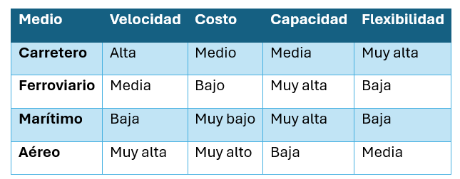

Unidad IV · Tema 4.1
Importancia y Modos de Transporte
Eslabón logístico fundamental que asegura la movilidad eficiente de materiales y mercancías en todas las etapas del proceso productivo. Los precios de transporte representan uno de los mayores porcentajes del costo logístico total, por lo que su adecuada gestión impacta directamente en la rentabilidad.
4.1 Objetivos del transporte
- Garantizar entregas oportunas.
- Reducir costos logísticos.
- Proteger la mercancía durante el traslado.
- Cumplir con los tiempos acordados con el cliente.
- Optimizar rutas de distribución.
- Reducir emisiones contaminantes.
4.2 Modos de transporte
Transporte terrestre (Carretero)
El transporte de carga más utilizado en México depende de una variedad de factores, pero el terrestre emerge como el líder indiscutible para su distribución.
- Ventajas: Amplio alcance, versatilidad, envío directo al domicilio (puerta a puerta), menor tiempo de preparación.
- Desventajas: Tráfico, accidentes, restricciones carreteras, mayor costo en largas distancias.
- Aplicación textil: Distribución de telas y prendas a centros comerciales y distribuidores nacionales.
Transporte ferroviario
Transporte por ferrocarril: destinado principalmente a la movilización de carga masiva.
- Ventajas: Eficiencia operativa, rendimiento superior / alto desempeño, optimización de recursos energéticos.
- Desventajas: Falta de flexibilidad de horarios y rutas, dependencia de terminales ferroviarias.
- Aplicación textil: Transporte de pacas de algodón, fibras sintéticas y grandes lotes de tela pesada.
Transporte marítimo
Navegación comercial, transporte por agua, tráfico marítimo, fletamento marítimo en buques y cargueros portacontenedores.
- Ventajas: Gran capacidad volumétrica, bajo costo por unidad de peso, ideal para exportaciones intercontinentales.
- Desventajas: Prolongación del trayecto (tiempos de tránsito elevados), sujeción a la infraestructura portuaria, condiciones meteorológicas.
- Aplicación textil: Exportación masiva de prendas hacia Europa, Asia y América del Sur.
Transporte aéreo
Usado cuando una carga comercial común recibe prioridad de abordaje debido a su extrema urgencia.
- Ventajas: Máxima velocidad de traslado, resguardo total y mínima manipulación intermedia.
- Desventajas: Muy costoso, restricción severa de peso y volumen de carga.
- Aplicación textil: Muestras textiles de pasarela, colecciones de moda rápida y productos de alta costura premium.
Transporte multimodal
Sistema que utiliza dos o más medios para mover mercancías (habitualmente en la misma unidad de carga o contenedor), pero se gestiona mediante contratos independientes para cada etapa y transportista.
Comparación de los medios de transporte
| Medio | Velocidad | Costo | Capacidad | Flexibilidad |
|---|---|---|---|---|
| Carretero | Alta | Medio | Media | Muy alta |
| Ferroviario | Media | Bajo | Muy alta | Baja |
| Marítimo | Baja | Muy bajo | Muy alta | Baja |
| Aéreo | Muy alta | Muy alto | Baja | Media |

Comprueba tu comprensión
¿En qué circunstancias operativas conviene optar por transporte multimodal (marítimo + carretero) en vez de flete aéreo directo para exportar chamarras a Norteamérica?
Caso de estudio: Empresa "Exportaciones Textiles ESIT"